CS 180: Project 4
This is project 4 of CS 180 in Fall 2026, on image warping and mosaicing.
Note: click any image to enlarge it.
Part A: Image Warping and Mosaicing
A homography is a 3×3 matrix H that maps a point p in one image to its matching point p′ in another. Points are written as (x, y, 1), and the result is divided by its last value to get back to pixel coordinates. This works when the camera only rotates between photos, or when the thing in the photo is flat, like a book cover or a sign.
Part A 1: Shoot the Pictures
I took all the photos on this page myself, except for the Berkeley Law sign in Part A 3, which I found online. Each pair below is the same scene from two angles.
The first set is Giannini Hall, which I took right before lecture. The second set is the Gateway building, also right before lecture. The third set is the living room of my apartment, which could do with some cleaning.
Building

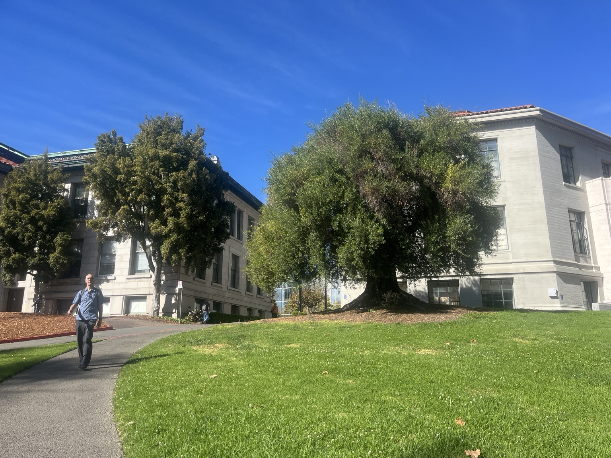

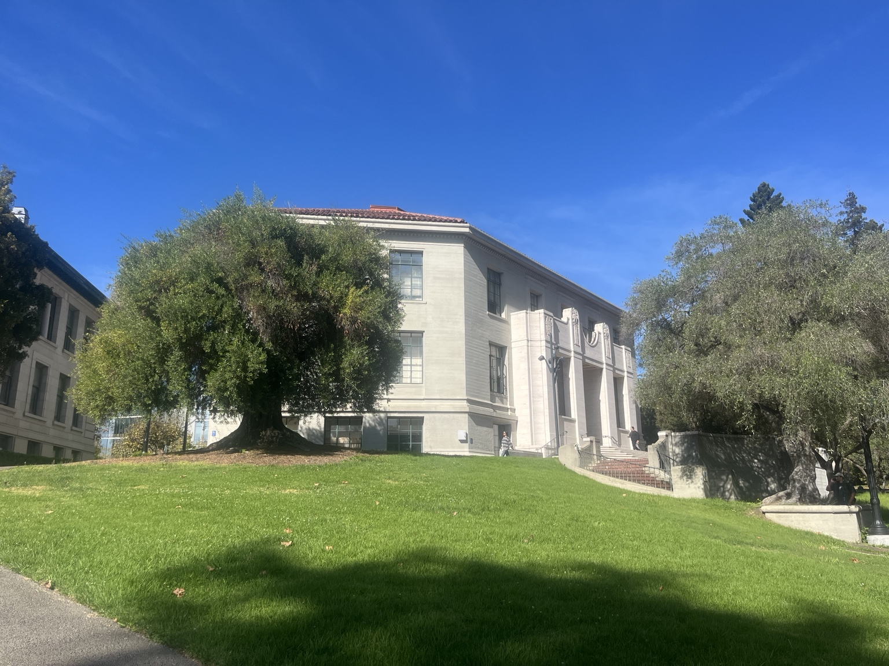
Gateway

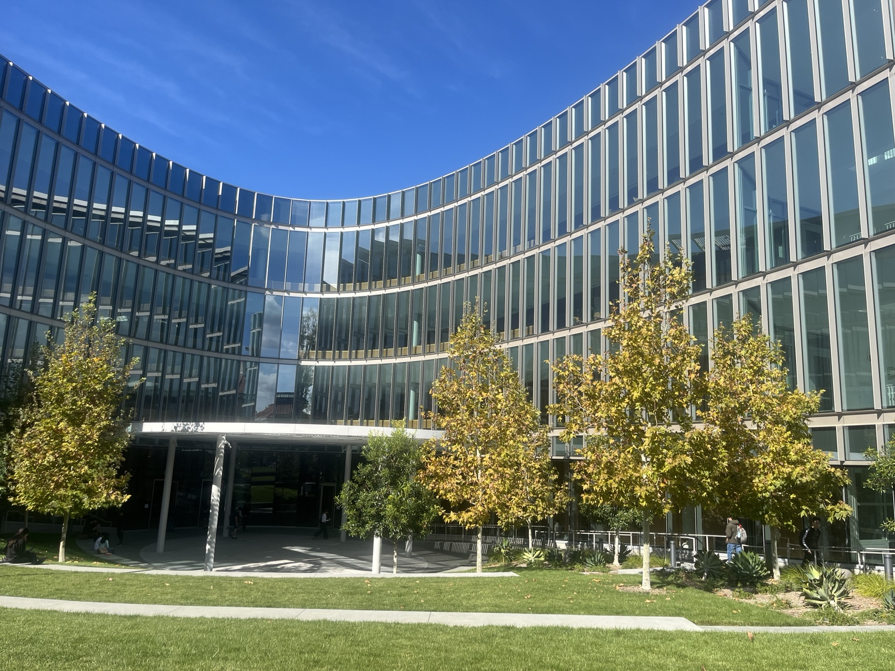

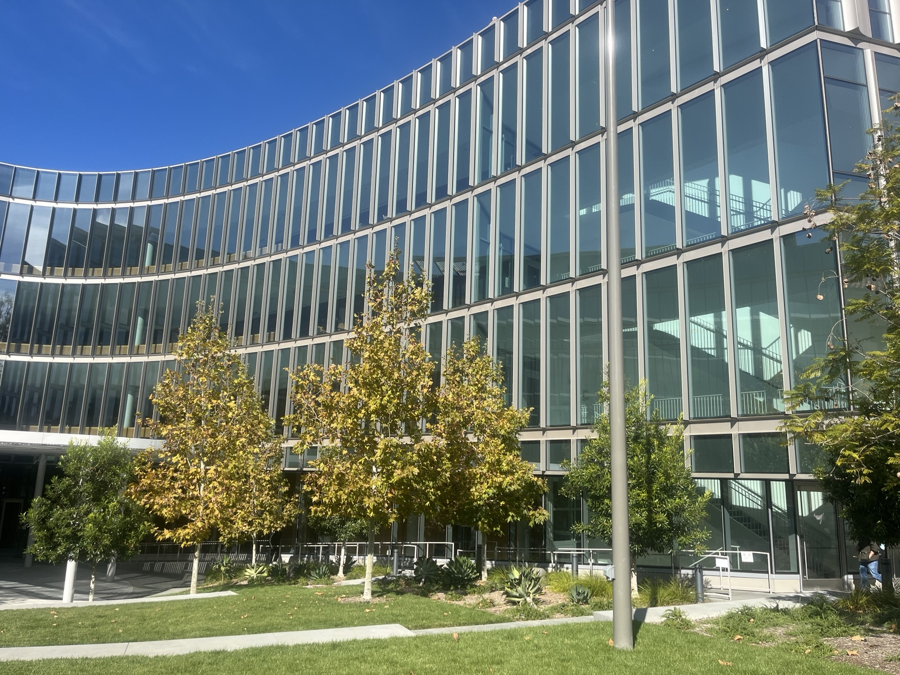
Living Room

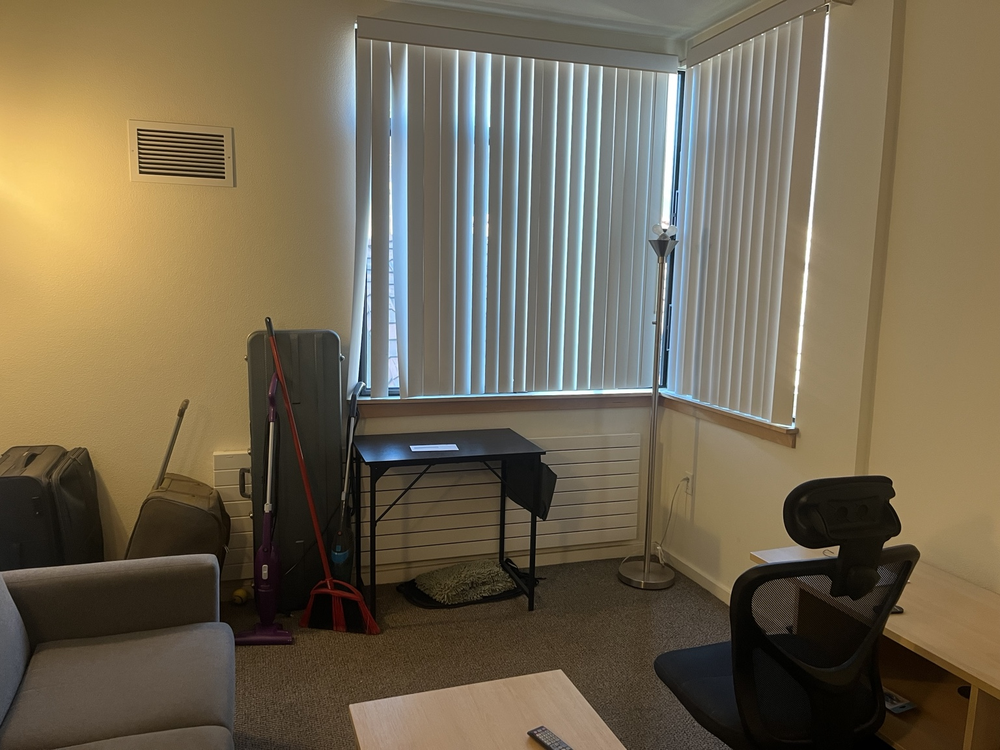

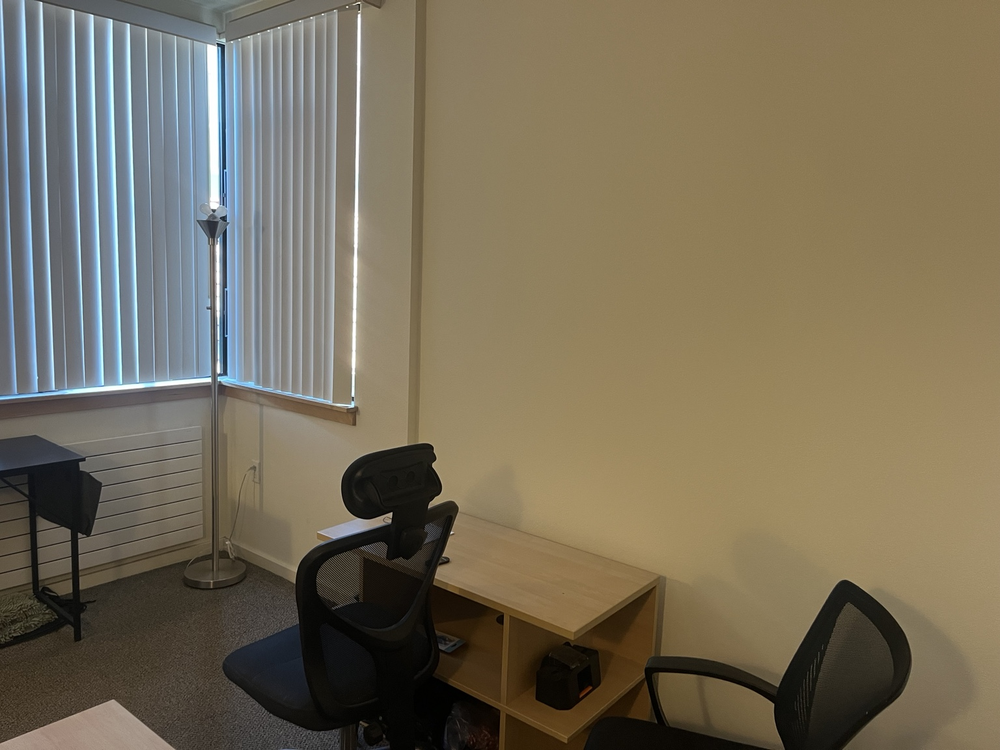
Part A 2: Recover Homographies
Each pair of points gives these two rows, and h9 is fixed at 1. With more than 4 points this is solved by least squares. H maps the second image onto the first, which is the one I leave fixed in the mosaic.
I clicked points that are easy to find in both photos, like the roof and window corners on Giannini Hall, the trees, ground and entrance canopy at Gateway, and the window frames, desk and chair in my living room. I used 11 to 14 points per pair, so there are more equations than unknowns and least squares evens out small clicking errors. With the H I got, the warped points land about 4 to 7 pixels from where I clicked them on average.
Building
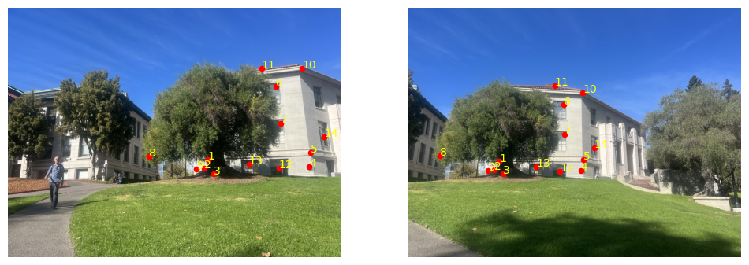
| 0.6228 | 0.0723 | 470.86 |
| −0.2583 | 0.9140 | 59.17 |
| −0.000308 | −0.000023 | 1 |
Gateway
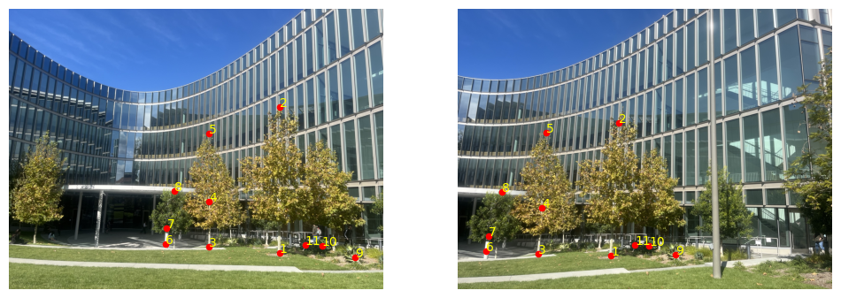
| 0.4991 | 0.0492 | 518.75 |
| −0.2828 | 0.8645 | 104.51 |
| −0.000334 | 0.000008 | 1 |
Living Room
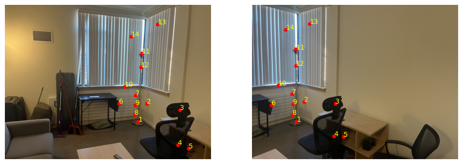
| 0.3056 | −0.0029 | 771.08 |
| −0.2694 | 0.8469 | 113.84 |
| −0.000482 | 0.000040 | 1 |
Part A 3: Warp the Images
Nearest neighbor rounds that source location to the closest pixel. Bilinear takes a weighted average of the four pixels around it. For each photo I clicked the four corners of something that should be a rectangle, and warped them onto a rectangle. I clicked the corners with matplotlib's ginput, and mapped them to a 1000×600 rectangle for the book and an 800×400 one for the sign.
Scheme Book
I got this book from the Gateway building research floors, where they were giving out free books, and photographed it on a table at home. The book is lying on its side, so the rectified cover comes out sideways.
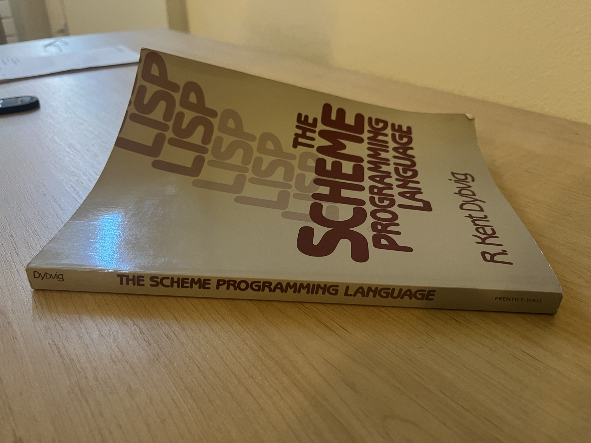

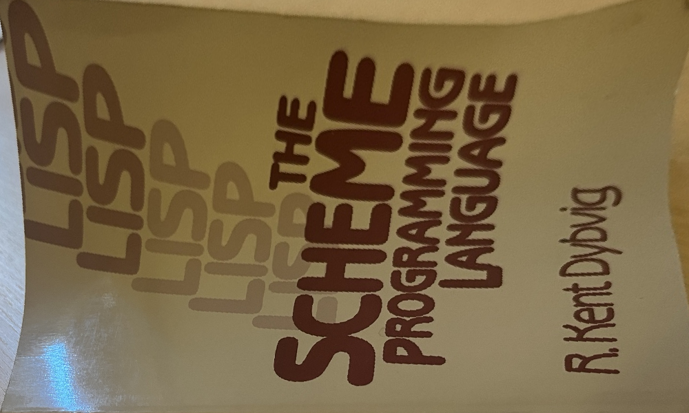

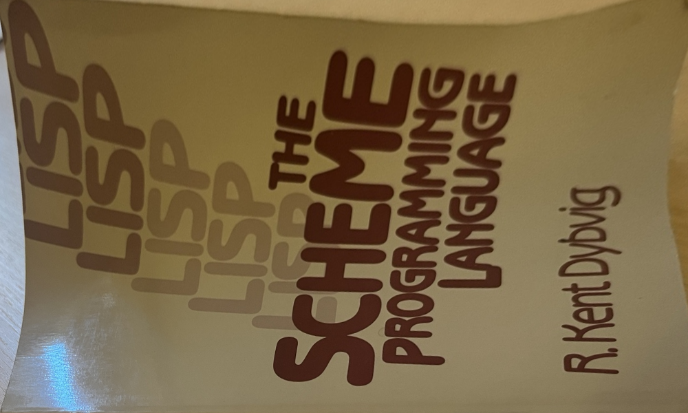
Berkeley Law Sign
I found this photo online.

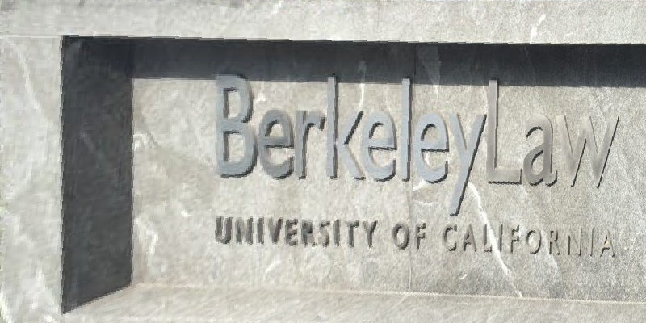

Nearest Neighbor vs Bilinear
Both give the same shape, but zooming in shows the difference. Nearest neighbor has jagged, stair-step edges on the letters, while bilinear makes them smooth but slightly softer. Bilinear is slower since it reads four pixels and takes a weighted average for every output pixel, while nearest neighbor just reads one. On my laptop, bilinear took about 1.5 times as long on the book and 2.7 times as long on the sign. The better quality is worth it, so I used bilinear for the mosaics.
| Image | Nearest neighbor | Bilinear |
|---|---|---|
| Scheme book | 0.69 s | 1.05 s |
| Berkeley Law sign | 0.09 s | 0.23 s |
Part A 4: Blend the Images into a Mosaic
I leave the first image fixed and warp the second into it with bilinear interpolation. w is the distance from each pixel to the outside of its image, so the overlap fades from one photo into the other instead of a hard edge. I find the canvas size from the box that fits both the fixed image and the warped one, then place each image on the canvas using the offset from the warp.
All three line up well. The building edges and windows match across the overlap, and the feathering hides the change in brightness between the two photos. The trees are a little softer in the overlap, probably because the leaves moved a bit between shots. The living room mosaic stretches out a lot on the right, since I turned the camera far between the two photos and a flat projection stretches things more the further they are from the fixed image.
Building
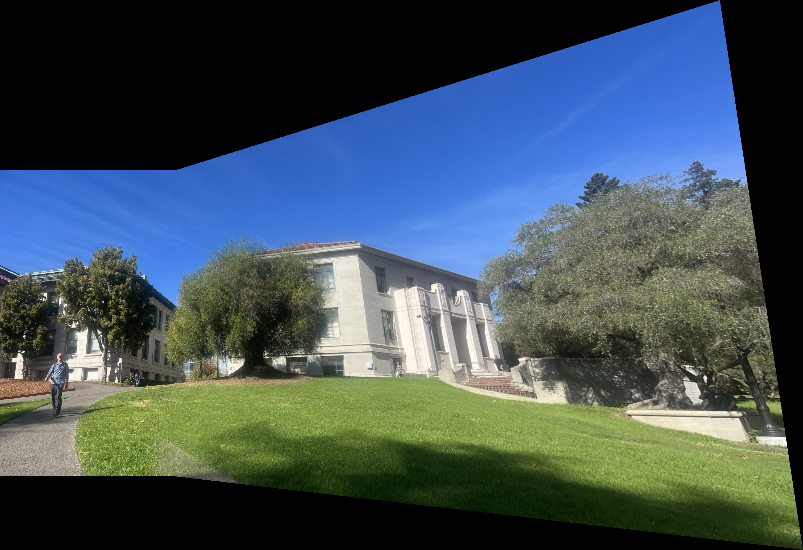
Gateway
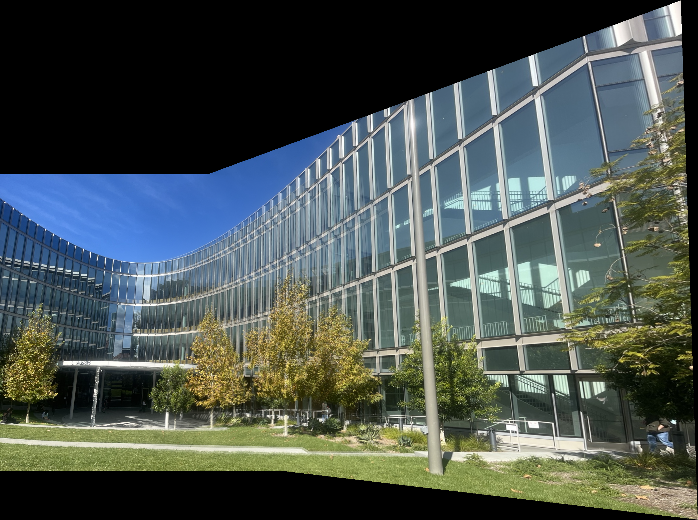
Living Room
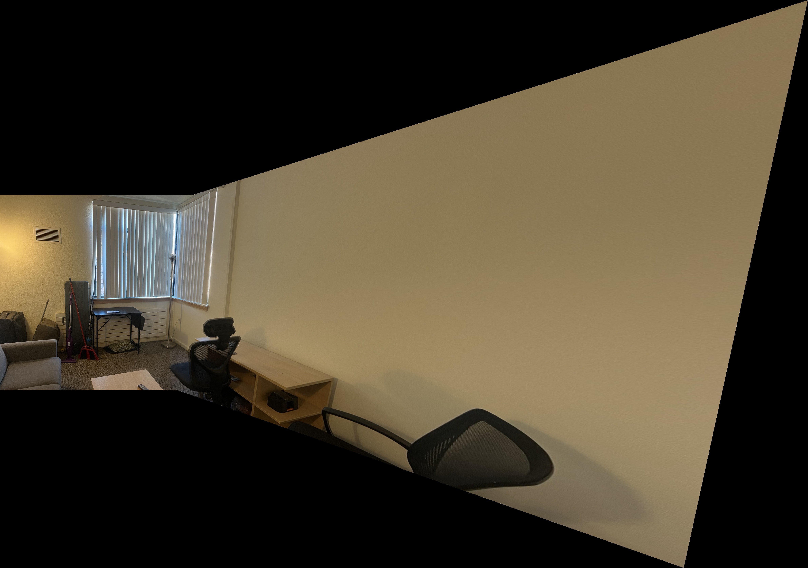
Part B: Feature Matching for Autostitching
In Part A I clicked the correspondences by hand. In Part B they are found automatically, following “Multi-Image Matching using Multi-Scale Oriented Patches” by Brown et al., with a few simplifications: a single scale, no sub-pixel accuracy and no rotation invariance. I used the same three image pairs as Part A, and reused computeH and the mosaic code from Part A.
Part B 1: Harris Corner Detection and ANMS
Harris finds points where a small window changes a lot when shifted in any direction. I used the staff harris.py on the grayscale image. It builds the matrix M from the image gradients at every pixel with σ = 1, and scores it with f, which is the paper's corner strength det / tr scaled by 2. Every local maximum of f counts as a corner, and corners within 20 pixels of the border are dropped so the 40×40 window in B 2 always fits.
Since there is no threshold, Harris keeps even very weak corners and finds far too many to match. ANMS gives each corner a radius ri, the distance to the closest corner that is clearly stronger than it, and keeps the corners with the largest radii. A corner that is the strongest in a big area gets a big radius, so the kept corners are both strong and spread out. I run ANMS on all the Harris corners and keep the top 500. I compare squared distances with dist2 from harris.py, which gives the same ranking.
On Giannini Hall, Harris finds 46089 corners, so many that they cover almost the whole photo. After ANMS the 500 corners are spread evenly over the image. Because Harris has no threshold, some of the kept corners land on plain areas like the sky and the grass, where there is not much to match. Gateway and the living room look the same way, with about 42000 to 48000 corners per photo before ANMS.
Building

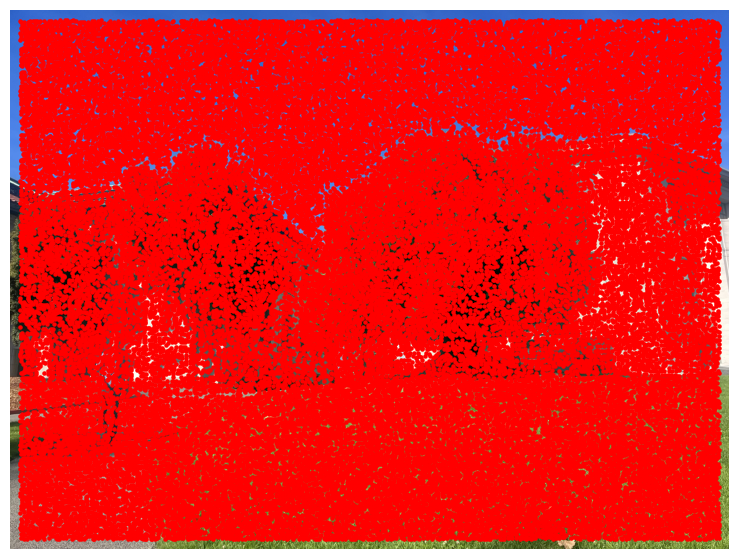

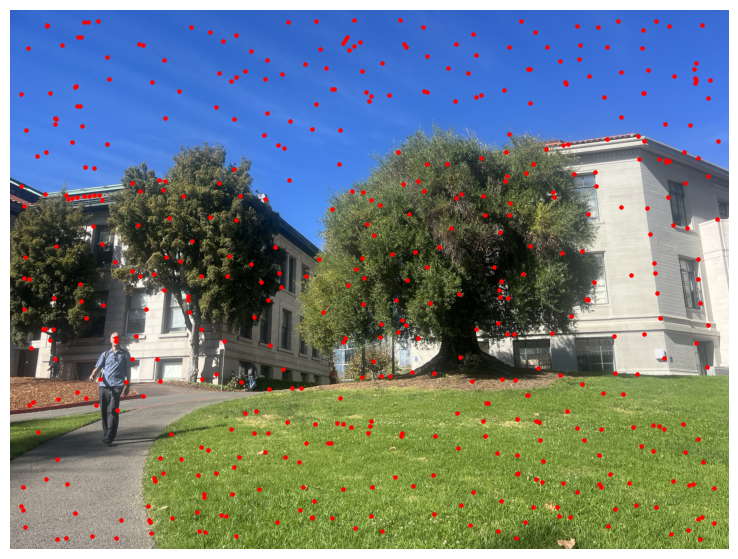
Gateway

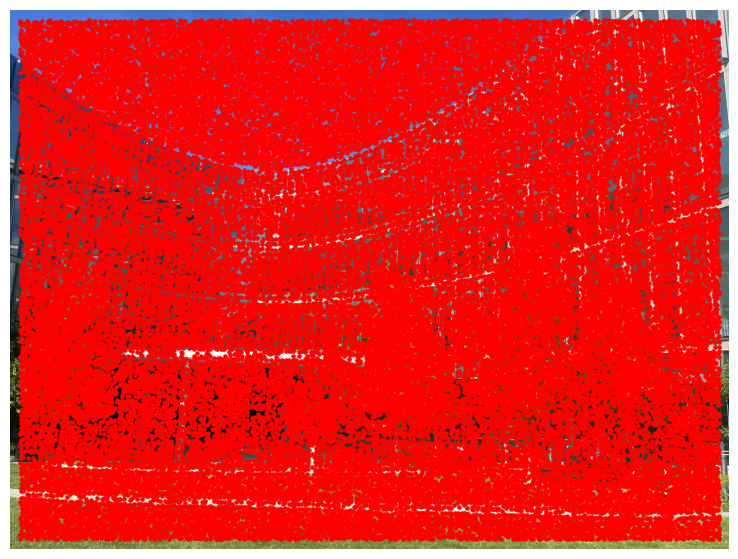

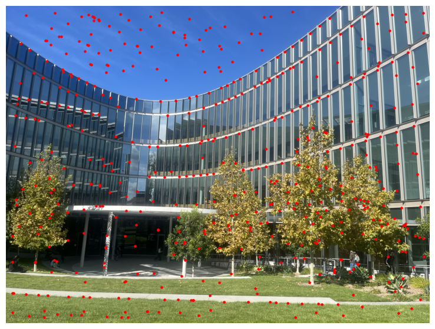
Living Room

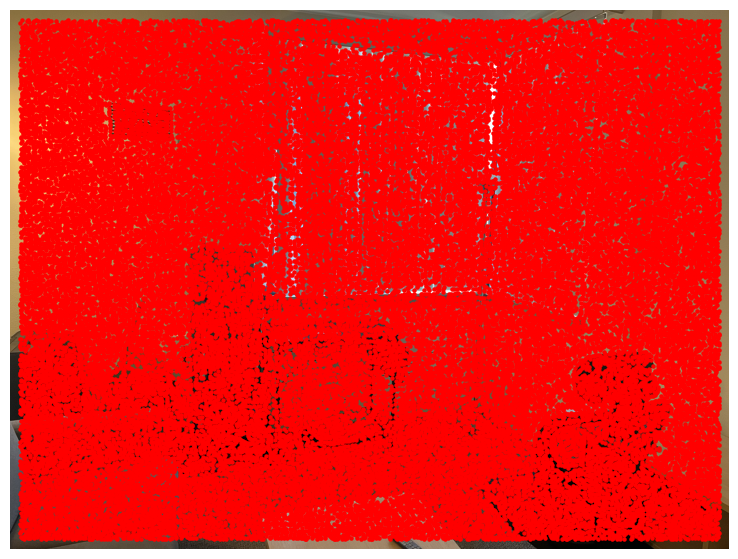

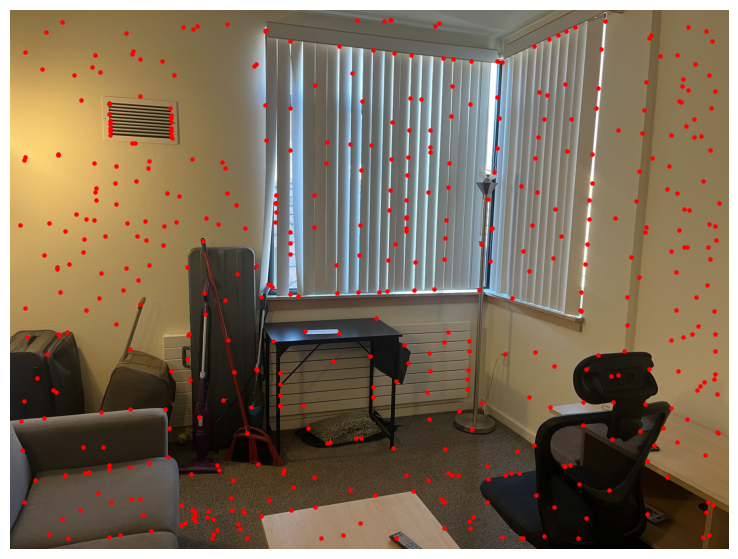
Part B 2: Feature Descriptor Extraction
For each corner I take the 40×40 window around it from the image blurred with σ = 2, and sample every 5th pixel to get an 8×8 patch p. The blur stops the sampling from aliasing, and the big window makes the descriptor less sensitive to small errors in the corner position. Then I subtract the patch mean μ and divide by its standard deviation σ, so differences in brightness and contrast between the two photos don't matter. Each descriptor is flattened into a vector of 64 values.
Below are the first 10 descriptors from the first photo of each pair. They look very blurry, but each one still keeps the rough shape around its corner, like an edge or a bright spot.
Building
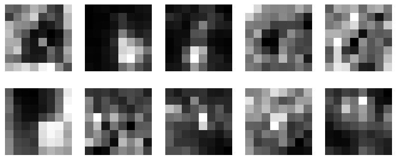
Gateway
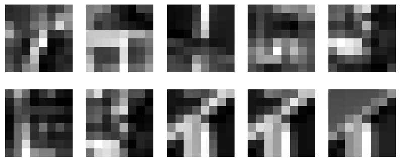
Living Room
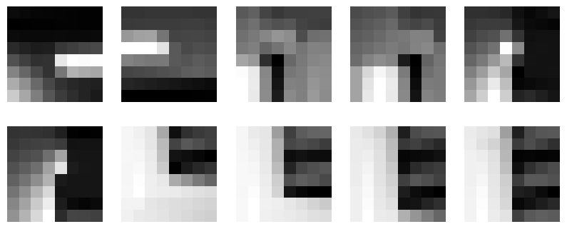
Part B 3: Feature Matching
For every descriptor in the first photo I find its two nearest neighbors in the second, where e is the squared SSD between descriptors. A wrong match usually has a second best that is almost as close as the best, so I only keep a match if the ratio of the two is below 0.7. This is Lowe's ratio test, and Figure 6b of the paper shows it separates right and wrong matches much better than the distance alone. The figures show the 50 matches with the lowest ratio.
On Gateway most of the matches look right. The building and the living room have many more clearly wrong ones, like the long diagonal lines that connect points on different objects. A lot of these start in plain areas like the sky or the wall. RANSAC removes these in B 4.
Building
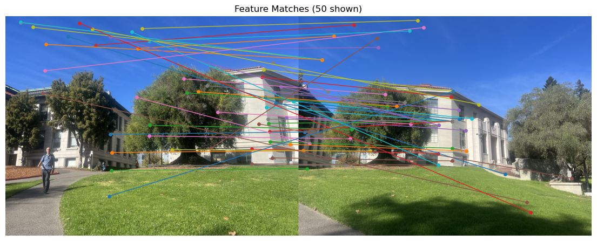
Gateway
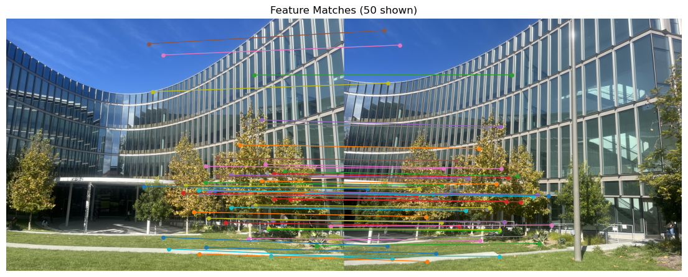
Living Room
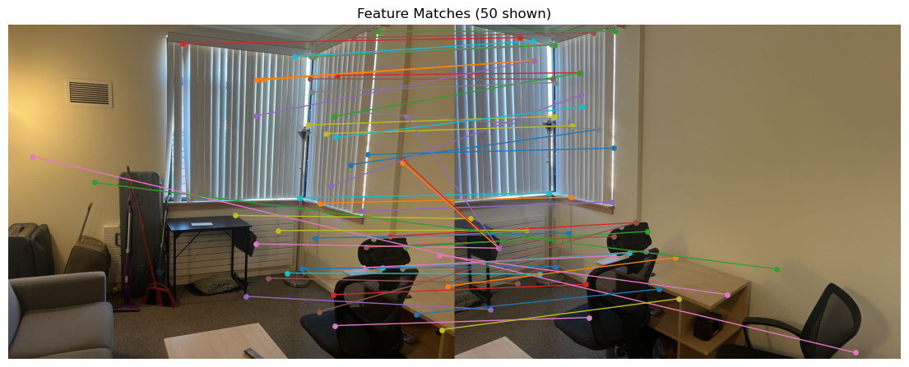
Part B 4: RANSAC and Automatic Stitching
RANSAC picks 4 random matches, fits an exact homography to them with computeH from Part A, and counts how many of all the matches it maps within 3 pixels of their partner. These are the inliers. I repeat this 2000 times, skipping samples where all 4 points are on a line, and keep the largest set of inliers. Then I refit H with least squares on all the inliers and build the mosaic with the same code as Part A 4.
| Scene | Harris | After ANMS | Matches | Inliers |
|---|---|---|---|---|
| Building | 46089 / 47856 | 500 / 500 | 51 | 11 |
| Gateway | 42899 / 42438 | 500 / 500 | 120 | 70 |
| Living room | 47025 / 47320 | 500 / 500 | 98 | 19 |
RANSAC removes the wrong matches from B 3. On the building and in the living room the diagonal lines are gone, and the lines that are left all point roughly the same way. On the building only 11 of the 51 matches survive, and in the living room 19 of the 98. Many of the matches came from plain areas, so most of them get thrown out, but 11 is still more than the 4 a homography needs. On Gateway 70 of the 120 matches are inliers. With the final H, the inliers land about 0.6 to 1.5 pixels from their match on average.
Building
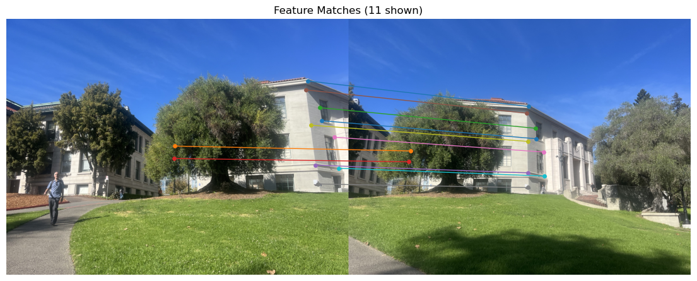
Gateway
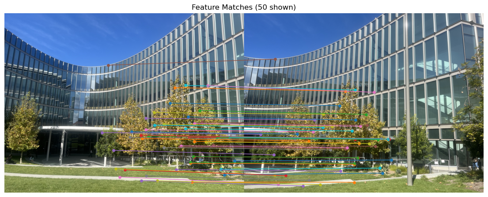
Living Room
Manual vs Automatic
The automatic mosaics look about as good as the manual ones. On the building and Gateway the two versions are very close, and the edges and windows line up in both. They differ most in the living room, where the automatic mosaic stretches the right side less. Both homographies were fit to points around the windows, desk and chair, so small differences between them grow a lot at the far right edge. The chair shows a double edge in both versions. The chair is close to the camera, so it moves more than the rest of the room if the camera shifts a little between shots. At least I didn't have to manually click points.
Building
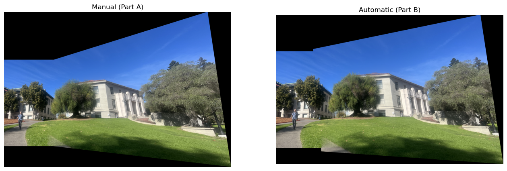
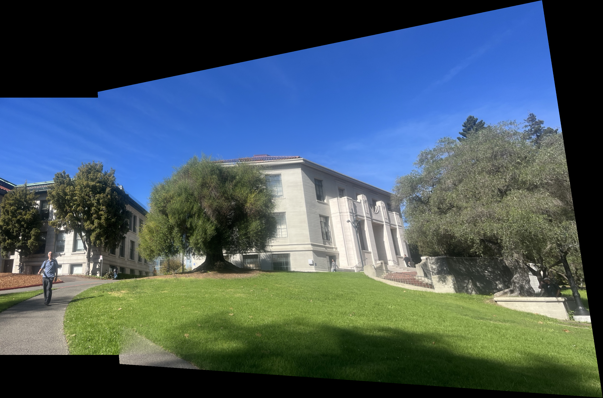
Gateway
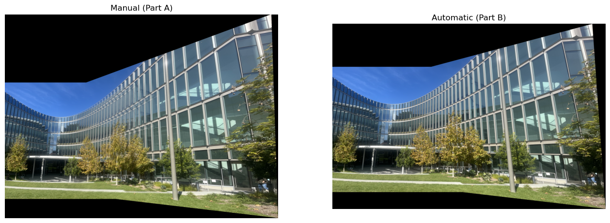
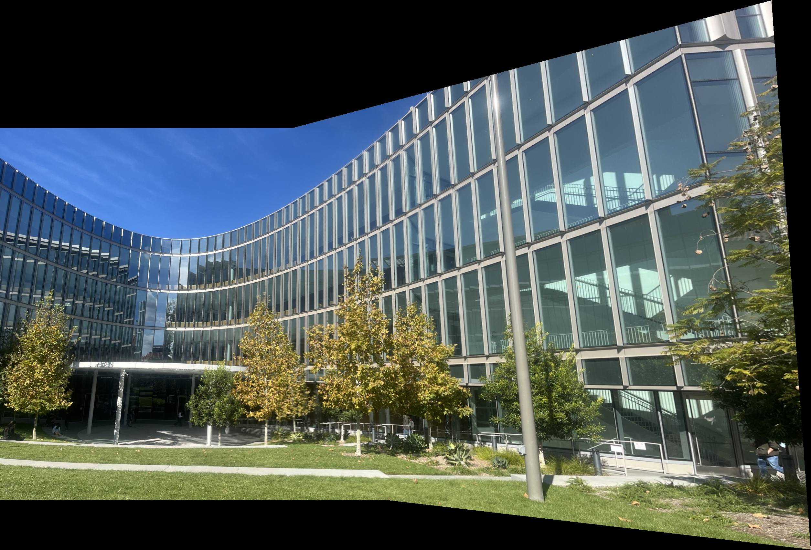
Living Room
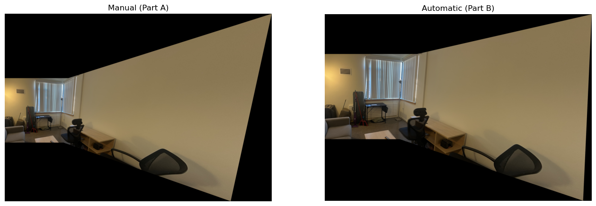
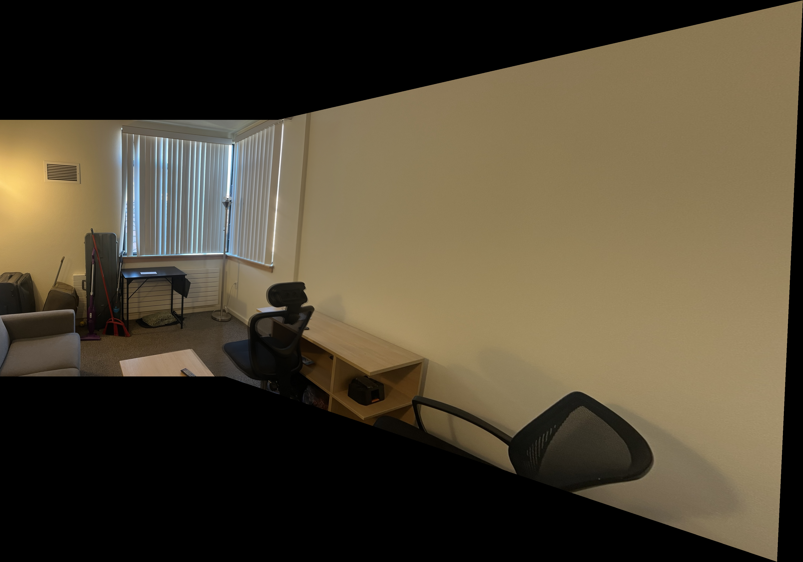